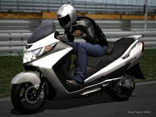

Жду погоды....
Узнай реальную погоду
на 3 дня
Прошлым летом сдал экзамен на категорию "А" .
Ща расскажу, что было потом
Никогда раньше не ездил на мопедах и мотиках.

А тут начал работать в труднодоступном на машине месте, в центре города.
Пару раз попробывал на машине съездить на работу.
Узнай место, куда мне надо добираться, это полная жопа
Вышло, что в тот день я больше ездил на машине,чем работал.
- По дороге я хотел есть
- Другие участники движения, видимо, тоже хотели есть, поэтому были злыми
- Дорога, которую проходил пешком за 30 мин, преодолел за 1,5 часа
Вот и решил попробывать на мотике.

Только с погодой пока не везет.
Приходится пока пешком
- Дождусь тепла
- Буду пока изучать быстрые маршруты
- Вообще, пока, на мотике я сильно устаю